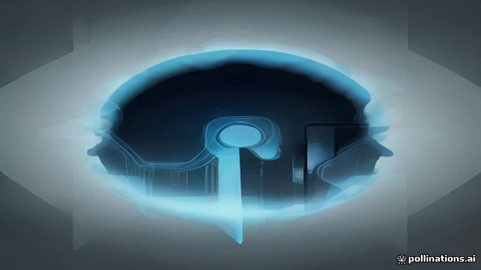

মিডটার্ম পরাজয়ের পর ট্রাম্পের ইরানের প্রতি দ্বিধা প্রকাশ
Al Jazeera English · 2026-11-07
AI-generated illustrationআল জাজিরা জানিয়েছে, পার্টির পরাজয়ের পর ট্রাম্পের অস্পষ্ট অবস্থান, ইরানের ‘কগনিটিভ ওয়ারফেয়ার’ চলমান।
আল জাজিরা ইংলিশ রিপোর্ট করেছে যে, ইরানের ‘কগনিটিভ ওয়ারফেয়ার’ চালুর প্রেক্ষিতে ট্রাম্প আবার পারমাণবিক সাইটে আক্রমণ করবেন কিনা প্রশ্ন উঠছে।
মিডটার্ম নির্বাচনে পার্টির পরাজয়ের পর থেকে ট্রাম্প মিশ্র বার্তা পাঠাচ্ছেন, যা যুক্তরাষ্ট্রের ইরান নীতি নিয়ে অনিশ্চয়তা সৃষ্টি করছে।
Read the original reporting at the links above.
English version
Trump's mixed messages on Iran amid post‑midterm uncertainty
Al Jazeera English reported that questions are being raised about whether former President Donald Trump might consider striking nuclear facilities again, in the context of Iran’s alleged “cognitive warfare” activities.
The outlet noted that Trump has been issuing mixed messages since his party’s defeat in the recent midterm elections, suggesting uncertainty in U.S. policy toward Iran.